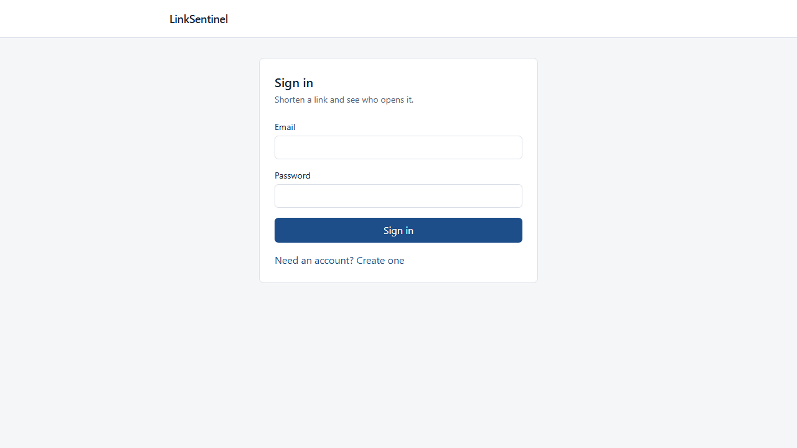
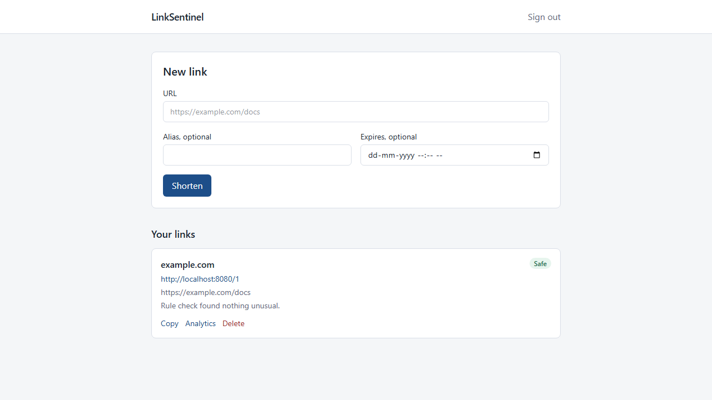
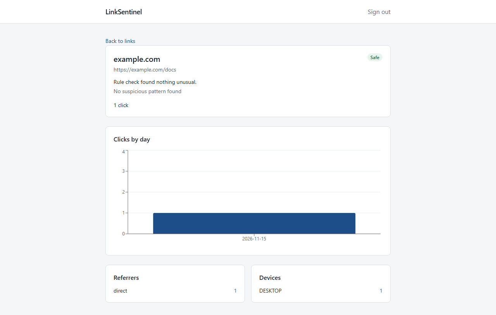

URL shortener with cached redirects, rate limiting, click analytics, and link screening. Portfolio project for a fresher backend role. Documentation date: 17 Nov 2026.
LinkSentinel lets a signed-in person turn a long URL into a short code, share that code, and see what happened when someone opened it. Creating the link also records whether the URL looks safe or unsafe. Opening the short link redirects immediately. The safety check and the click insert never sit on that redirect.
Public shorteners get slow when every redirect reads the database, and they get used to hide phishing and spam. This app keeps the code-to-URL mapping in Redis, limits how fast one caller can hit the API, and screens the URL once, at creation time.
It is one Spring Boot service plus a small React app. It is not a microservice system, and it has no admin panel.
The short address is the address of this app, not a rewrite of the target. https://docuflow-gbh3.onrender.com/ stays that URL. Locally the short form is http://localhost:8080/1. Another computer cannot open localhost. Set APP_BASE_URL to a public host when the API is deployed, and new short links use that host. The target URL does not change.
Register and login take an email and a password (8 to 72 characters). Passwords are stored with BCrypt. The response is a JWT whose subject is the numeric user id. The UI keeps that token in localStorage under linksentinel.token and sends Authorization: Bearer on later calls. Emails are stored in lower case. A duplicate email is 409. A wrong password is 401.
On startup, if DEMO_EMAIL and DEMO_PASSWORD are both set, the API creates that user when the email is new. Defaults are demo@linksentinel.local and password123. An existing row is left alone, so a later password change in the environment does not overwrite the hash.
POST /api/links takes url, an optional alias, and an optional expiresAt. The URL must be http or https and at most 2048 characters. An alias must match ^[0-9A-Za-z]{3,32}$. The words api, v3, error, actuator, and swagger are reserved so a short code cannot hide the API. A past expiry is 400. A taken alias is 409.
If the caller does not send an alias, the code is a base62 encoding of the next value from link_code_seq (alphabet 0-9A-Za-z). A unique violation retries a few times.
Before the row is saved, the URL is screened. The verdict (safe or unsafe, reason, title, summary, source) is stored on the link. An unsafe verdict does not block creation. The badge is the warning.
GET /{code} is public. It looks up Redis key link:{code}. A hit returns the cached URL. A miss reads Postgres, and a live link is written back to Redis. The TTL is the shorter of CACHE_TTL (default 1 hour) and the time left before expiry. The response is 302 with a Location header. Unknown code is 404. An expired link is 410 and is not served from a fresh database read.
After the 302 is decided, a virtual thread stores the click: time, referrer (or direct), and device type from the user agent (DESKTOP, MOBILE, TABLET, BOT). That insert does not delay the redirect. Clicks still in the executor can be lost if the process stops.
Every API and redirect request goes through a Redis token bucket. After login the bucket is the user id. Before login it is the socket address. It does not read X-Forwarded-For. The bucket math is in TokenBucket and the same steps run atomically in redis/token_bucket.lua. A denied call is 429 with Retry-After. Defaults are capacity 30 and refill 0.5 tokens per second. The Redis key includes the capacity so an old bucket is not reused after a config change.
GET /api/links/{code}/stats returns the owner's link only. Someone else's code is 404. The payload has the target URL, total clicks, clicks by day, up to 10 referrers, device counts, and the screening verdict.
The model runs only when a link is created. It is never called on the redirect. The client is Spring RestClient, not Spring AI, so the process still starts when no key is set. It POSTs to {LLM_BASE_URL}/v1/chat/completions and asks for JSON: safe or unsafe, reason, a short title, and a summary. Provider, base URL, key, model, and timeout come from the environment. Defaults are provider openai, base https://api.openai.com, model gpt-4o-mini, timeout 3 seconds.
The verdict is cached in Redis under the SHA-256 of the URL. A model result is kept 24 hours. If the call fails, times out, or the key is empty, a rule check runs and the link is still created. Rules cover a raw IP host, credentials embedded in the URL, the hosts phish.test and malware.example, and patterns such as verify-account, free-prize, and secure-login. A rules result is cached 10 minutes. The current Compose stack has no LLM key, so the DocuFlow link was marked Safe by the rule check ("No suspicious pattern found"), not by a model.
There is no landing page. Routes are /login, /, and /links/:code.
| Method | Path | Auth | Result |
|---|---|---|---|
| POST | /api/auth/register | no | 201 and a JWT. Duplicate email is 409. |
| POST | /api/auth/login | no | 200 and a JWT. Bad credentials are 401. |
| POST | /api/links | JWT | 201. Bad URL or past expiry is 400. Alias taken is 409. |
| GET | /api/links | JWT | Links owned by the caller. |
| DELETE | /api/links/{code} | JWT | 204. Someone else's code is 404. The cache entry is removed. |
| GET | /api/links/{code}/stats | JWT | Clicks, referrers, devices, screening. |
| GET | /{code} | no | 302. Unknown is 404. Expired is 410. |
Errors are JSON: error, message, and fields when validation failed. Swagger UI is at /swagger-ui.html. OpenAPI JSON is at /v3/api-docs.
users holds email, password hash, and created time. links holds code, target URL, owner, expiry, and the screening columns. clicks holds link id, time, referrer, and device, and is deleted with the link. Flyway migration V1__init.sql creates them. Hibernate validates the schema. It does not create tables.
Browser
|-- React UI (port 5173) -- REST --> Spring Boot API (port 8080)
|-- GET /{code} ------------------> Spring Boot API
|-- PostgreSQL (users, links, clicks)
|-- Redis (link cache, screen cache, rate-limit buckets)
|-- LLM HTTP API (only on link create)
Docker Compose runs four services: postgres:18.7-alpine, redis:8.10.3-alpine, the API image (Eclipse Temurin 25, jar built in the image), and the UI image (Vite build served by nginx). The browser talks to http://localhost:8080 because VITE_API_URL is baked in at image build. CORS allows CORS_ORIGIN (default http://localhost:5173) and exposes Retry-After.
JWT and rate-limit filters are on the security chain only. They are not also registered as servlet filters. If they were, the limiter would count the caller as anonymous and then skip its second run.
| Piece | Choice |
|---|---|
| Language | Java 25 |
| API | Spring Boot 4.1.2 (Web MVC, Validation, Security, Data JPA, Data Redis, Flyway) |
| Auth | BCrypt passwords, JWT HS256 via jjwt 0.13.0. Secret must be at least 32 characters. |
| Database | PostgreSQL 18.7 in Compose. Hibernate ORM 7. Flyway 12. |
| Cache and limiter | Redis 8.10.3. Cache-aside for code to URL. Lua token bucket. |
| API docs | springdoc-openapi 3.2.0 |
| AI client | Spring RestClient to an OpenAI-compatible chat completions endpoint |
| Backend tests | JUnit 5, MockMvc, Testcontainers 2.0.5. If Docker is down, embedded Postgres 18.6 and embedded Redis. |
| UI | React 19.3, Vite 8.3, Tailwind 4.3, React Router 7.18, Recharts 3.10 |
| UI tests | Vitest 5.1 and Testing Library. One Playwright 1.65 flow. |
| Run | Docker Compose. Maven Wrapper 3.10 for the backend. Node 24 for the frontend image. |
copy .env.example .env docker compose up --build
Set JWT_SECRET to at least 32 characters. Leave LLM_API_KEY empty to use rules, or set LLM_BASE_URL, LLM_API_KEY, and LLM_MODEL. UI: http://localhost:5173. API: http://localhost:8080. Swagger: http://localhost:8080/swagger-ui.html. Demo login: demo@linksentinel.local / password123.
Backend tests, from backend: .\mvnw.cmd test. Frontend, from frontend, with the API on port 8080 for the browser test: npm test then npm run e2e.
On 17 Nov 2026, .\mvnw.cmd test ran 19 tests and 0 failures. That process did not use Docker. It logged Integration services: embedded Postgres and Redis (Docker engine is not running) and used Postgres 18.6. The same tests cover base62, the token bucket, create then redirect then stats, duplicate alias 409, invalid URL 400, expired link 410, missing token 401, rate limit 429, a cache hit (the second redirect still returns the cached URL after the database row changes), an unsafe mocked model verdict, and a model failure that falls back to rules.
Redirect load, 400 requests, 25 in flight, 30 warmup requests, HTTP 302 only:
| Mode | p50 | p95 | requests/sec | errors |
|---|---|---|---|---|
| Redis cache on | 176.26 ms | 616.50 ms | 104.1 | 0 |
| Cache off | 214.27 ms | 399.31 ms | 110.0 | 0 |
The cache lowered the median. On this run the tail and the requests per second did not. Both modes share one JVM and both still write clicks to Postgres.
Frontend, 15 Nov 2026: Vitest 5 tests, 0 failures, 14.91s. Playwright 1 test passed in 20.9s (create account, shorten https://example.com/docs, see it in the list).
Later on 17 Nov 2026, docker compose up --build started Postgres 18.7, Redis 8.10.3, the API, and the UI. Demo login returned 200. In the UI, https://docuflow-gbh3.onrender.com/ became http://localhost:8080/1, opened DocuFlow in the browser, and the analytics page showed the clicks, referrer direct, and device DESKTOP.
Sign in.

A shortened link and the Safe badge.

Click analytics.

http://localhost:8080. A public UI needs a rebuild with the public API URL.localhost links only work on the machine that runs the API.